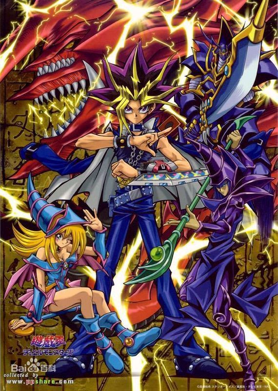

游戏王
About
Blog
游戏王
Document
游戏王

《游戏王》是由ぎゃろっぷ制作的电视动画，于2000~2004年之间在东京电视台播出，全224集。
改编自高桥和希创作的漫画《游戏王》第8~38卷的以卡牌怪兽决斗和七件千年神器为主线的故事，但因为中途漫画故事情节进度跟不上，故加插大量漫画没有的剧情和人物。此举为脱离原作独立创作故事奠定下基础。
为纪念《游戏王》诞生20周年，日本将从2015年2月7日起，将该电视动画重制，推出《游戏王-怪兽之决斗》